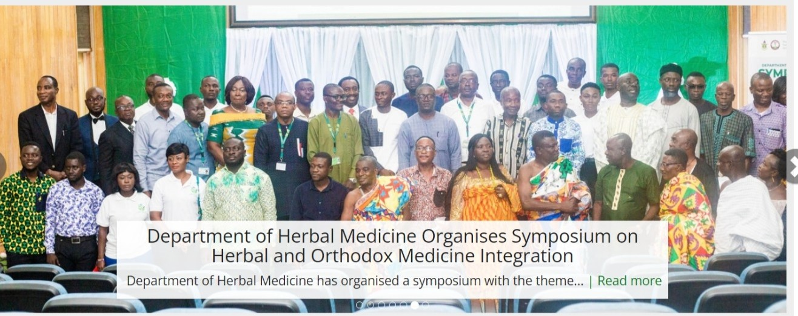

KUMASI TECHNICAL UNIVERSITY

The faculty of Kumasi Technical university runs teo flagship programmes, 4years bsc,herbal medicine and 6 years Doctor of pharmacy programmes.In addition to this we have a 2 years doctor of pharmacy TOP-UP programmes for praticing pharmacists, the first of its kind in the west afric sub region. Also each of the the five departments of the faculty runs Msc, MPil and phD programmers in the various disciplines of pharmacy
WELCOM MESSAGE FROM THE DEAN
For over 60years the school Faculty and departments has continuousbeen a leader in the training of students to become good patriotic citizens of county. Students of Kumasi Technical University and practioners of the schholsand west african sub region. it is renowed for innovation in clinical,computerized , technical, art, busniess activites. The school over the years have produced well trained graduates who occupy well-paid position in the Pharmaceutical sector especially in all sectors of the country. about Elighty percent of the faculty of all the department of the schools .The faculty of Kumasi Technical university runs teo flagship programmes, 4years bsc,herbal medicine and 6 years Doctor of pharmacy programmes.In addition to this we have a 2 years doctor of pharmacy TOP-UP programmes for praticing pharmacists, the first of its kind in the west afric sub region. Also each of the the five departments of the faculty runs Msc, MPil and phD programmers in the various disciplines of pharmacy
The Facults of Kumasi Technical UNIVERSITYread more| DEPARTMENT | Facults |
|---|---|
| Departments of Fishers and Watershed Management | Fauclty of Renewable Natural Resource |
| Departments of Educational Innovation in Science & Technologyt | Faculty of Bulit Environment |
| Department of Wood Science and Technology | Faculty of Educational Studies |
| engenerring department | engenerring department |
| engenerring department | engenerring department |
| engenerring department | engenerring department |
ulty of Kumasi Technical university runs teo flagship programmes, 4years bsc,herbal medicine and 6 years Doctor of pharmacy program
ulty of Kumasi Technical university runs teo flagship programmes, 4years bsc,herbal medicine and 6 years Doctor of pharmacy program